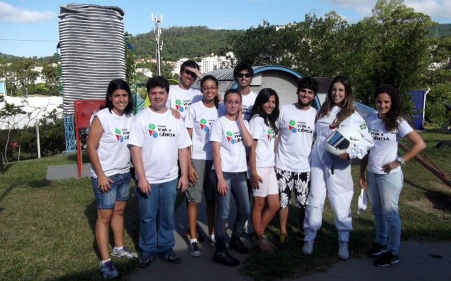

Origem
Nascido em Foz do Iguaçu, terra das Cataratas na divisa do Brasil com a Argentina e Paraguai mais um Latino Americano. Sou professor de Ciências da Natureza, Biologia, Física, Química e agora me aventurando em Pensamento Computacional.
Formação

Conclui minha graduação em 2019 na Universidade Federal da Integração Latino Americana (UNILA), no curso de Licenciatura em Ciências da Natureza - Biologia, Física e Química. No entanto, ela se inicia na Universidade Federal de Santa Catarina (UFSC), em 2010, no curso de Licenciatura em Física. Cursei por quatro anos até trocar para Filosofia, onde fiquei como aluno extracurricular, em um momento bem existencialista da minha vida. Até decidir, em 2016, voltar para Foz do Iguaçu para estudar na UNILA. Após a conclusão em 2019, veio a pandemia e fiquei em "modo hibernação" por dois anos. Até voltar para os estudos esse ano, onde estou aprendendo algumas linguagens de programação pela Alura e também cursando duas Pós-graduações em Educação. Uma em Educação 4.0 e outra em Metodologia do Ensino de Ciências, com previsão para terminar em dezembro de 2022.
Experiências
 Tive oportunidades profissionais incríveis durante minha graduação em Licenciatura. Na Universidade Federal de Santa Catarina (UFSC), participei de um projeto chamado "Parque Viva a Ciência", onde atuava como mediador do espaço com os visitantes. O espaço era formado por brinquedos gigantes envolvendo conceitos da física, entre os brinquedos do "Parque Viva a Ciência" se destacava a bicicleta suspensa, as gangorras gigantes e a cadeira de polias. A partir da interação dos participantes com os brinquedos do parque, se discutia e trabalhava alguns conceitos da física.
Posteriormente participei de alguns projetos PIBID, um projeto com a finalidade de iniciar o docênte em sala de aula antes de terminar a graduação. O projeto visa auxiliar as escolas da redondeza da Universidade, proporcionar novas metodologias a serem aplicadas pelos bolsistas e, principalmente, ter o primeiro contato com a realidade escolar. Durante minha graduação tive a oportunidade de participar de três projetos de PIBID, um da disciplina de Física, outro de Ciências da Natureza e o último em Biologia.
Em 2016 ingressei na UNILA e em 2017 consegui uma bolsa para fazer intercambio na Colômbia. Fiquei 6 meses em Popayán, fazendo matérias da ementa de Biologia e de Ciencias de la naturaleza. Cursei as disciplinas de Historia y epistemología de la pedagogía, Parque Nacionales Naturales, Ecologia Laboratório de Ecologia e Evolucion. Além disso, o intercambio foi importante para conhecer um pouco da cultura e da educação colombiana. Conheci o museo de ciencias naturales de la Universidad del Cauca. Fiz passeio pelos Parques Nacionais, vi os Páramos colombianos e me encantei com a Biodiversidade desse País.
Quando retornei ao Brasil, fiz um processo seletivo para o setor educacional do Parque Tecnológico de Itaipu (PTI). Passei como assistente educacional. Dentro do PTI foram dois anos de aprendizado. Trabalhei em conjunto com uma equipe na elaboração de um Espaço Não Formal de Educação móvel intitulado Expedição do Conhecimento. Um caminhão com um eixo temático Água, Energia e Sustentabilidade, nele foi construido algumas abordagens pedagógicas sobre o tema. O caminhão também é customizável podendo sempre ser atualizado. Também participei da construção de um projeto pedagógico online, abordagens pedagógicas nos espaços da Itaipu, como o ecomuseu, refugio biológico entre outros locais dentro do PTI. No final de 2021 iniciei minha carreira como professor do estado.